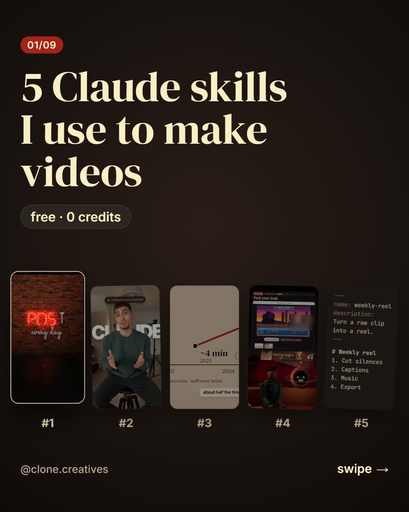

5 Claude Code skills for making videos: one paste
The 5 skills I use to make videos with Claude Code, installed with one paste. Claude shows you every command before it runs it, so nothing happens without your OK.
1. Install all 5
Open Claude Code in any folder
Desktop app: Code tab → Local → Open folder…, or typeclaudein a terminal.Paste this and approve each command
Claude shows every command before it runs it. Read it, then approve.Install these 5 Claude Code skills for making videos. Show me each command before you run it. First check that I have Node 18+, git, Python 3.10+ and ffmpeg. If something is missing, tell me how to install it and wait. 1. claude-animation-styles: git clone https://github.com/cloneaisystem-cell/claude-animation-styles into ~/.claude/skills/animation-styles (on Windows: C:\Users\<me>\.claude\skills\animation-styles). Copy its commands/*.md files into ~/.claude/commands/, then run npm install in its template folder. 2. Remotion skills: npx skills add remotion-dev/skills --skill '*' -g -a claude-code -y 3. HyperFrames: npx skills add heygen-com/hyperframes --skill '*' -g -a claude-code -y 4. claude-real-video: pip install "claude-real-video[whisper]" then npx skills add HUANGCHIHHUNGLeo/claude-real-video --skill '*' -g -a claude-code -y 5. skill-creator: claude plugin marketplace add anthropics/skills then claude plugin install example-skills@anthropic-agent-skills When everything is installed, list what was added and tell me to restart Claude Code.
Restart Claude Code
Close and reopen it, then type/to see the new commands and skills.
Installed? Here's what's next
Now make them work for you.
On their own, the 5 skills wait for you to type. This is the system I run on top of them every day: it brings me ideas and script drafts each morning, edits in plain English, schedules the posts and answers the DMs. Even the DM that sent you here went out by itself. No code, and I approve every step:
Under a minute, sound on. The presenter is my AI clone, made with the methods taught inside.
What you get inside
A path for complete beginners
START HERE takes you from zero to your first consistent AI character, lesson by lesson. Then Go Viral: 8 short lessons and cheat sheets for Reels and TikTok.
Every reel I post, taken apart
The prompts, the edit choices and what each shot cost in credits. You copy what already worked instead of guessing.
Claude Code, in plain English
Master Claude Code: real builds with every file included. Claude writes the code; you say what you want and approve each step.
30+ courses on today's tools
Kling 3.0, Veo 3.1, Nano Banana Pro, ElevenLabs voices, UGC and cinematic ads, prompt systems, 4K upscaling.
Feedback from me
Post your video and I tell you what I'd change. A real person reads it and replies.
From skill to client work
Modules on finding your first clients, pricing what you make and delivering it like a pro.
Your first week
- Day 1. Say hi and tell me what you make. I point you to the module that fits you.
- Days 2–4. Follow START HERE or Master Claude Code, one short lesson an evening.
- Days 5–6. Open the breakdown of a reel you liked and use its structure for your own idea.
- Day 7. Post your first video in the community and get my feedback on it.
Stop saving tutorials. Start posting.
AI Virality Creators is my Skool community. Everything above sits in one place, in order, with someone who answers you.
- Master Claude Code: real builds with every file included, starting with the Night Shift experiment.
- 30+ step-by-step courses on AI characters, video, voices, ads and Claude Code.
- The breakdown of every reel, with the prompts and the credit cost.
- Personal feedback on what you post.
- 120+ creators building the same skills next to you.
$9/month today; the Skool page shows the current price before you pay. Cancel anytime from your Skool settings. Publish your first AI video within 30 days or get your money back.
Before you join
I'm a complete beginner. Is this too advanced?
No. START HERE assumes zero experience and goes in order: your first image, your first video, then a character that looks the same in every shot. If you can type a sentence, you can follow it.
I can't code. Do I need to?
No. For the Claude Code lessons you describe what you want in plain English, Claude writes the code, and you approve each step. Every lesson shows the exact clicks.
I don't have much time.
The lessons are short and numbered, so you always know which one is next. One lesson an evening keeps you moving, and the community keeps you posting.
Can't I learn all of this free on YouTube?
You can start there, and free guides like this one are made for exactly that. What you won't find for free: the right order, my real project files, the credit cost of every shot, and someone who looks at your video and tells you what to fix.
AI tools change every month. Won't it be outdated?
New tools get their own modules: Kling 3.0, Veo 3.1 and Nano Banana Pro are already in. The breakdowns teach how a reel is built, and that carries over to whatever tool comes next.
AI credits get expensive. What will I spend?
Every breakdown shows what each shot cost, so you know before you start. A lot of what I teach costs 0 credits, like the guide you're reading now.
Is the person in the video real?
The presenter is my AI clone, built with the same methods taught inside. I say so every time. The community is run by me, and I answer you myself.
Will this make me money?
I can't promise income, and nobody honest can. You get the skill, a portfolio of finished videos, and modules on finding clients and pricing your work. What you do with it is up to you.
Is it only about video?
Video is the core. The other half is Claude Code: ideas, editing, scheduling and DMs that run while you work on the next video. Prompting, voices and client work are in there too.
What if it's not for me?
Cancel anytime from your Skool settings. And if you don't publish your first AI video within 30 days, ask me for your money back.
2. What each one does
1 · claude-animation-styles: 9 animations, one command each
Our free skill. Type /neon POST every day, /particles me.jpg or /flight-path Paris to New York and Claude renders a 9:16 animation with your words, on your computer.
Repo: github.com/cloneaisystem-cell/claude-animation-styles (MIT)
2 · Remotion skills: Claude edits video in code
Teaches Claude how to build and edit videos with Remotion (React). Ask for cuts, captions, effects or a full edit and it writes the code and renders it.
Repo: github.com/remotion-dev/skills · install by hand: npx skills add remotion-dev/skills · Remotion is free for individuals and teams of up to 3 (licence).
3 · HyperFrames: HTML → animated scenes
Write a scene as HTML (charts, text, 3D) and render it as a video. Great for explainer and motion-graphics shots.
Repo: github.com/heygen-com/hyperframes · install by hand: npx skills add heygen-com/hyperframes (pick Core Skills when it asks)
4 · claude-real-video: lets Claude watch a video
Claude can't watch video on its own. This pulls scene-aware keyframes and a transcript from any clip, so Claude can break down a reference reel second by second.
Repo: github.com/HUANGCHIHHUNGLeo/claude-real-video · install by hand: pip install "claude-real-video[whisper]" then npx skills add HUANGCHIHHUNGLeo/claude-real-video
5 · skill-creator: turn any workflow into a skill
Describe something you do every week ("cut the silences, add captions, export 9:16") and Claude writes it as a reusable skill you call with one command.
Repo: github.com/anthropics/skills · install by hand, inside Claude Code: /plugin marketplace add anthropics/skills then /plugin install example-skills@anthropic-agent-skills
3. If something goes wrong
- A command isn't found (node, git, pip, ffmpeg): install it, reopen Claude Code, paste the prompt again. It skips what is already there.
- The new commands don't show up: restart Claude Code and make sure the session is Local.
- Anything else: paste the error into Claude Code and ask it to fix it. Still stuck? DM me @clone.creatives.